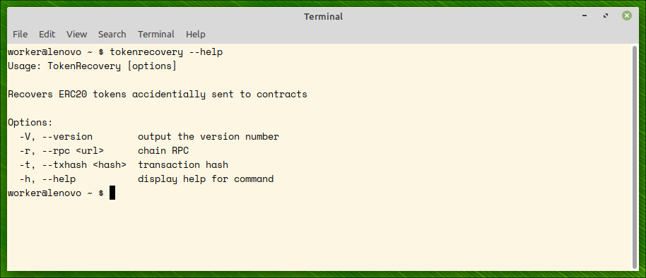
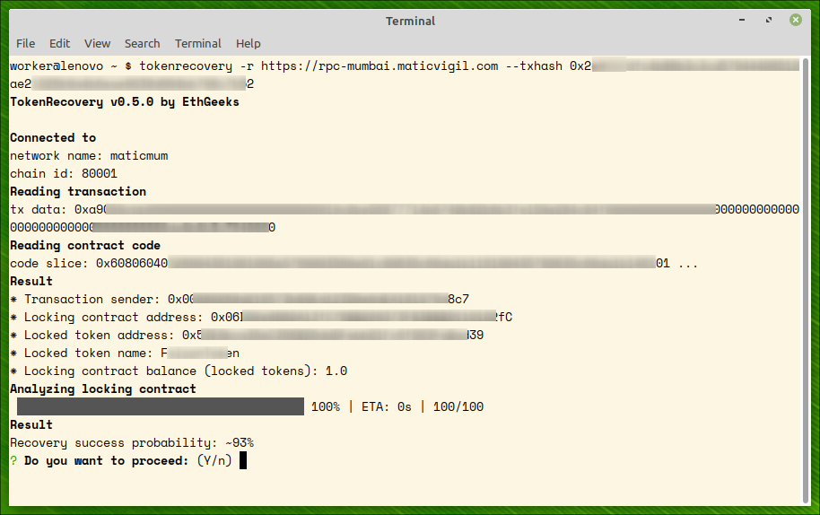
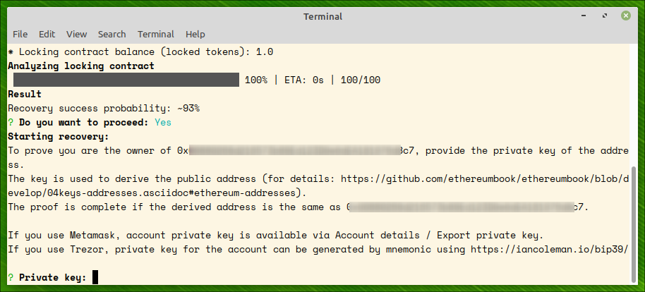
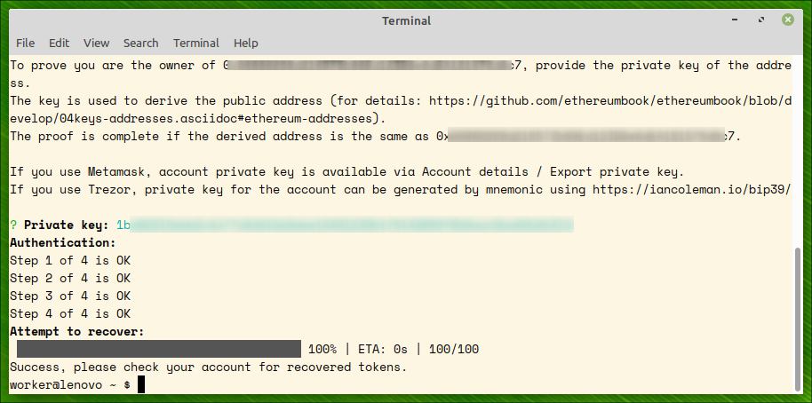
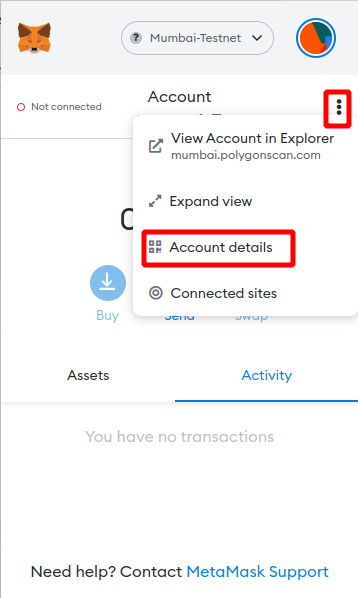
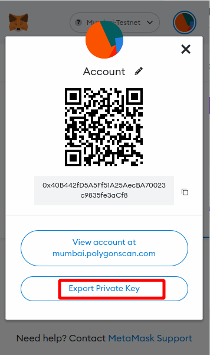
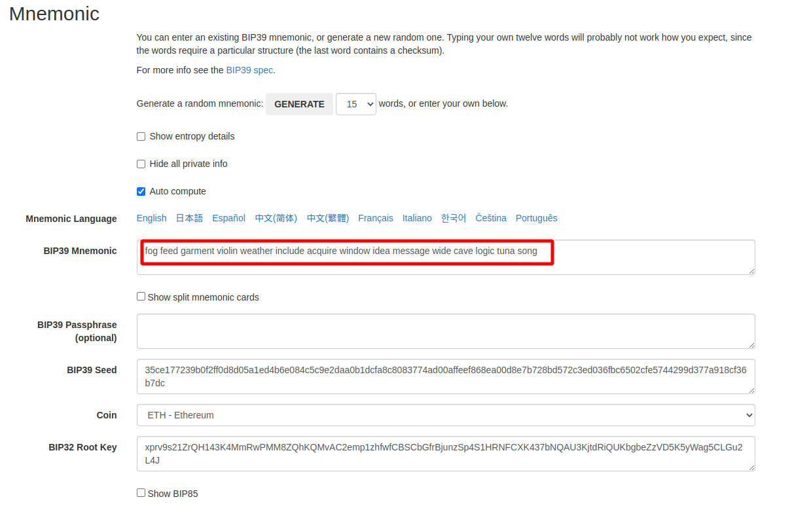
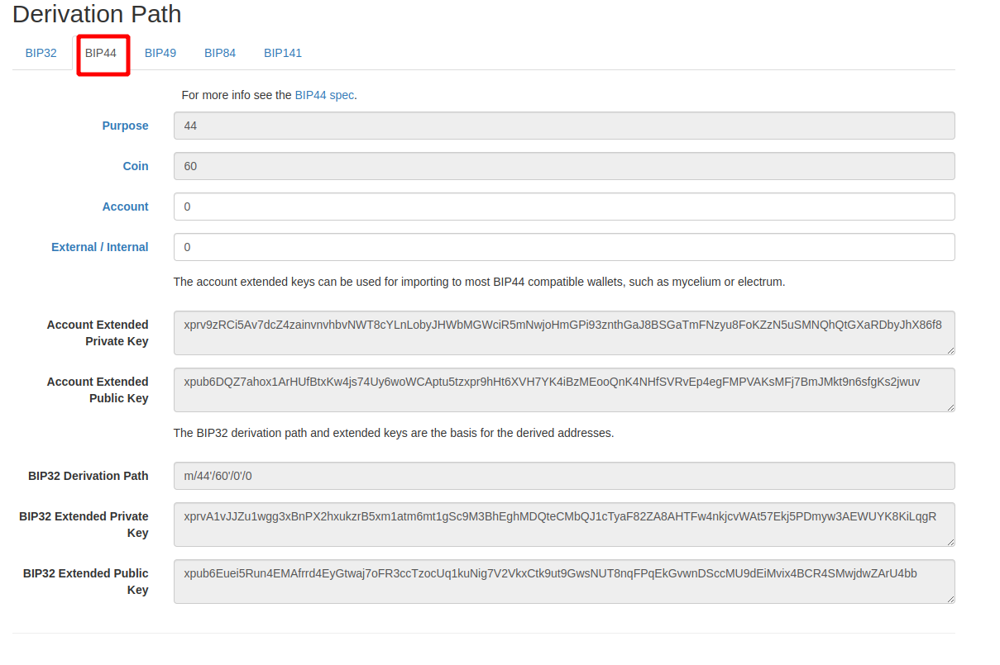
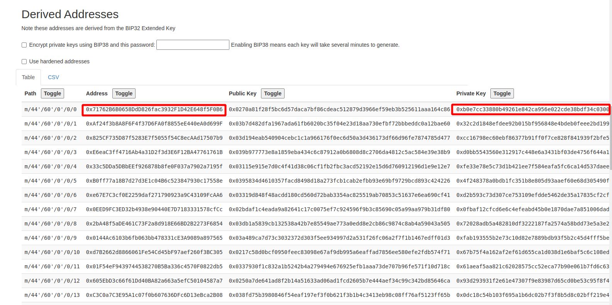

Recover ERC20 tokens sent accidentally to a contract
A very widespread mistake in the crypto world is to send ERC20 tokens to a contract address. The contracts behave like black holes towards the tokens sent to them. There are many discussions about the possible ways to recover the tokens from contracts (see References), and most deem that practically impossible.
The utility tries to recover accidentially sent ERC20 tokens to a contract address. The program analyzes the contract for the SWE weaknesses and several others and attempts to use one of them to resend the tokens back to the owner.
This software is heavily based on Formal Verification of Smart Contracts: Short Paper. Being a static analyzer, TokenRecovery does not need gas when searching for weaknesses, in contrast to other utilities. e.g. fuzzers. Only when (and if!) TokenRecovery finds a way to bring the locked tokens back to the owner, the owner pays a usual transaction fee for the recovery transaction.
You can download pre-built binaries or build from the source.
TokenRecovery is a command line program. Download the zip file and extract to any folder. The executable is statically linked, no loadable dependancies.
The latest release binaries for Windows and Linux are available here:
Building from source code entails setting up an OCaml development environment. For details see repo.
The utility accepts two command line options, rpc of the EVM-compatible network and the hash of the transaction by which you sent your tokens to the contract. The transaction contains all the data required by the utility to test token recoverability.
$ ./tokenrecovery --rpc https://rpc.ankr.com/eth --txhash 0x692449a8abf787633185716b75869bd87b7419db17434c4b7d354e1d3a8e562f
A list of RPC public endpoints can be found here or here.
What follows is an example of successful recovery on polygon mumbai testnet.
NOTE: To get program help, run
$ tokenrecovery --help

We supply polygon mumbai rpc url (https://rpc-mumbai.maticvigil.com) and transaction hash to the command. The utility analizes the contracts and predicts probability of token recovery from the contract. This can time some time (minutes).
PAY ATTENTION: txhash should be a transaction hash which transferred tokens from your account to the locking contract. TokenRecovery will refuse to proceed if the hash is not a transfer hash. You can always discover this hash by searching in a respective etherscan site (for example, https://etherscan.com for Ethereum or https://polygonscan.com for Polygon).

To prove the transaction belongs to an account in your ownership, you should provide account's private key. The key is used for two purposes:

After account's ownership of the tokens is proved, an attempt to recover the tokens is made. On success, all the locked tokens are recovered to the owner's account.

To get account private key from Metamask, click on three vertical points and Account details

and then Export private key:

For cold wallets which never export private keys, the only way to get account private key is to use seed phrase to regenerate the private key of the account. There is an online tool for the derivation: https://iancoleman.io/bip39
First, put your seed phrase to BIP39 mnemonic field and chose ETH coin:

Then chose BIP44 derivation path:

The utility will create all the addresses and private keys from the seed. Find your address and respective private key:
